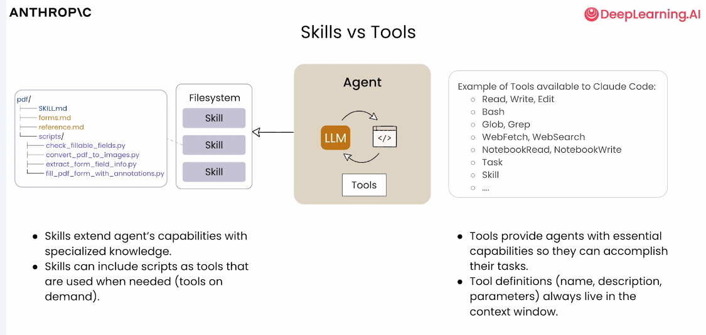

第 3 讲 大模型是如何工作的
第 2 讲我们回顾了 AIGC（AI Generated Content）的发展史；本讲把"引擎盖"掀开，看看你每天对话的 AI 里面到底发生了什么。这一讲是全课程"怀疑精神"的地基——学完你就会明白，为什么"AI 产出，人工把关"不是一句口号。
一、本讲学习目标
完成本讲后，你应该能够：
- 用自己的话解释大模型的"文字接龙"机制：它如何按概率预测下一个 Token，以及训练三部曲（预训练（Pre-training） → 指令微调 → 人类反馈对齐（RLHF））各解决什么问题；
- 用"行李箱"类比说明上下文窗口（Context Window）的作用与局限，解释"为什么 AI 聊久了会忘"；
- 现场演示并解释幻觉（Hallucination）现象，说出它的三个保守成因；
- 对照"能力边界地图"，对一次 AI 回答做出"可直接采用 / 必须核查 / 不应使用"的分级判断，形成自己的信任策略。
二、课前准备
- 无需编程基础：本讲全部内容用类比和现场演示讲清，不涉及代码，也不做公式推导；
- 无需安装新工具：带上前两讲注册好的 AI 对话工具（智谱清言（GLM）、DeepSeek 等，至少一个能登录）即可；
- 温故：翻出你第 2 讲的短文《我关注的三个 AIGC 节点》——本讲将解释这些模型"内部"在做什么；
- 带一支笔：第 1 节有全班文字接龙游戏，第 2 节有小组"找茬实验"，需要现场记录；
- 课堂将播放课程资料包视频《生成式人工智能如何工作》片段，课前不必自行观看。
三、核心概念精讲
1. 文字接龙：一台"概率预测机器"
先给本讲的主角定位。大模型（LLM，Large Language Model）名头吓人，但它每一步做的事情简单得出奇：看着前面的文字，预测下一个词块是什么，挑一个写出来；然后连刚写的这段一起看，再预测下一个……如此循环，直到一段话生成完毕。它不是在一间图书馆里"检索答案"，而是在玩一场永不停止的文字接龙。
- 教师在共享文档里给出一个开头，例如："实验报告的结论部分应当"；
- 全班轮流各接一个词，不许停顿、不许讨论，连续接 20 个词；
- 第二轮换个玩法：接词前先在心里写下 3 个候选词，再选出你认为"最可能出现"的那一个；
- 最后让 AI 从同一个开头独立接龙 3 次，对比：AI 的接法和你们哪里像、哪里不像？它两次接的一样吗？
这个游戏藏着你理解大模型需要的全部直觉：每次接词都是在候选里"挑大概率的那一个"。AI 的"语感"来自海量阅读，但机制和你们第二轮玩的一样——按概率挑选。这也解释了大模型的一个天生脾气：不确定性。同一个问题问两遍，答案可能不一样——不是它"坏了"，而是概率生成的天性。一句话：大模型的核心本质是概率预测机器，其所有能力都建立在对"下一个词出现概率"的计算之上。
还有两个常被问到的问题，顺便说清。其一，模型处理文字的最小单位不是"字"也不是"词"，而是 Token（词元）——把文字切成的一块块"积木"，一块可能是一个汉字、半个词，或一个英文单词；Token 同时还是"容量与计费单位"，像话费一样，你发出的每句话和 AI 回的每个字都按 Token 计入容量。其二，如今的不少模型已经能同时处理文字、图像、音频等多种输入输出（多模态（Multimodal）），但"预测下一个词块"这套基本工作方式并没有变。
接龙玩过了，"训练数据从哪来"也顺手就能讲明白。举一个例子：互联网上有这么一句话——"我最喜欢的食物是奶油贝果（bagel with cream cheese）"。训练时，这一句话会被拆成一连串填空题："我最喜欢的食物是____"（答案：一个）；"我最喜欢的食物是一个____"（答案：奶油贝果）……一句普通人写的话，就这样变成好几道"预测下一个词"的练习题。把全网数以千亿计的词都这样拆开，就是大模型的"题海"——数量级在数千亿乃至上万亿个词。现在你可以体会"读遍互联网"四个字的分量了。
2. 训练三部曲：从"读遍互联网"到"学会好好说话"
在进入三道工序之前，补一分钟"前史"——一条重要的主线：大模型不是凭空出现的，它站在"监督学习"十年积累的肩膀上。AI 是一套工具箱，今天最重要的两件工具，一件是监督学习（Supervised Learning）——给定输入 A，输出对应的标签 B，通俗说就是"擅长贴标签"；另一件才是我们的主角生成式 AI。监督学习的战绩早已遍布生活：垃圾邮件过滤（输入邮件 → 输出"是 / 不是垃圾邮件"）、广告点击预测、辅助驾驶识别前车位置、X 光片辅助诊断、语音识别（输入音频 → 输出文字）……这样的例子不胜枚举，本讲取四个讲透即可，共同点只有一个：都是"贴标签"，答案短而确定。
约 2010–2020 这十年，是"大规模监督学习"的十年。研究者发现一个耐人寻味的现象：用小模型时，喂再多数据，性能也不再上涨；而用大模型（大算力、大内存的机器上训练的大网络），性能随数据量增长持续攀升。Google Brain 团队早期定下的初始使命，就是这句朴素的话——"把模型做得非常大，喂非常多的数据"，而这个配方成功了。于是问题来了：能不能让这套"大力出奇迹"的路线学会生成文字？办法就是——把它用在"预测下一个词"这道填空题上。上一节的"贝果填空题"，用的正是监督学习的老手艺：输入 A（前文），输出 B（下一个词）。所以说，大模型是用监督学习"反复预测下一个词"造出来的。
有了这个底座，再看三道工序就顺理成章。刚出厂的模型只会接龙，还不会"当助手"。从一个会接龙的"底座"到你对话框里的助手，中间要过三道工序：
- 预训练（Pre-training）——"读遍互联网"。把网页、书籍、论文等海量文本喂给模型，训练任务只有一个：盖住每句话的下一个词，让它猜，猜完对答案，然后微调内部的参数。在庞大语料上重复无数遍之后，它积累了语言规律和各领域常识——但此时它只会"续写"，你问它问题，它可能接一句新的问题而不是回答。
- 指令微调——学会"听指令"。用大量"人类提问—示范回答"的范例继续训练，让它完成身份转变：从接龙者变成回答者。你布置任务，它知道自己的职责是给出回答，而不是自顾自往下续写。
- 人类反馈对齐（RLHF，Reinforcement Learning from Human Feedback）——学会"好好说话"。请人对同一个问题的多个回答打分：哪个更有用、更诚实、更无害；模型根据打分结果调整，逐渐向人类偏好靠拢——话变得得体、肯认错、少说浑话。
请注意三道工序的共同点：模型学到的始终是"什么样的文字像好回答"，而不是"哪句话是真的"。训练全程没有任何一步是"把每个事实核查一遍"。这句话，就是下一节的伏笔。
3. 幻觉：为什么 AI 会"一本正经地胡说八道"
幻觉（Hallucination）指 AI 输出与客观事实不符或凭空虚构的内容：引用不存在的文献、编造不存在的实验、报错物理常数，而且往往错得非常"像真的"。它的成因，学界并没有单一定论；科普层面，可以用三个因素共同理解：
- 它按概率生成，不按真假生成——它输出的是"像答案的话"，不是"验证过的事实"。流畅与正确，是两回事；
- 训练数据有边界——再大的语料也覆盖不了全部文献与细节，更没见过你的实验台和你的数据；在它没学过的地方，它会"合理脑补"；
- 它倾向于"给个答案"——训练中"给出一个回答"通常比"承认不会"更受鼓励，于是它宁可给出一个可能错误的答案，也不肯交白卷。
还有两条提醒，值得抄进笔记：幻觉可能由模型本身产生，也可能被用户的提问"引导"出来——你越是暗示"一定要列出 5 篇"，它越可能硬凑 5 篇出来；再加上输出本身的不确定性，同一问题两次回答不一致是常态。所以对付幻觉的办法不是"从此不信 AI"，而是分级信任：哪些回答可以直接用、哪些必须核查、哪些根本不该问它——这正是本讲能力边界地图和课后作业要训练的。
4. 上下文窗口：一只容量有限的行李箱
上下文窗口（Context Window）是模型单次对话能"看到"的内容上限。把它想象成一只行李箱：每次对话，你的提问、AI 的回答、你上传的 PDF 和图片，统统要装进同一只箱子。箱子是有容量的——装满了，最早放进去的内容就会被"挤出去"，于是 AI 开始"忘事"：忘了你们开头约定的格式，忘了你强调过的单位要求。
两个容易被忽略的事实：第一，AI 自己的长篇大论比你的一句提问更占地方——多轮对话的箱子里，双方的内容都在累积；第二，上下文长度是衡量模型能力的参数之一，不同模型的容量上限从十几万 Token 到上百万 Token 不等（具体数字以官方文档为准）。
容量上限带来一个著名现象——"吃书"。一个很形象的例子：把一本 80 万字的小说交给 AI，让它分析首尾是否呼应，它就已经很吃力；让 AI 自己写一部超长篇小说，写到一半，它可能就忘了开头的设定。遇到这种情况，补救办法有三：开新对话并重述关键背景；长文档分段处理；把重要约定写成长期指令（这个第 8 讲你会见到）。
5. 能力边界地图：哪些敢直接用，哪些必须核查
把前三小节合起来，就得到一张"能力边界地图"。它回答一个实际问题：同一款 AI，为什么总结课文很靠谱，荐文献却坑人？
| 任务场景 | AI 表现 | 背后原因（一句话） | 你的策略 |
|---|---|---|---|
| 写作、总结、翻译、润色 | 强 | 基于海量范例的"再创作"，正是概率生成的长处 | 可大胆用，通读一遍即可 |
| 头脑风暴、列提纲、换种讲法 | 强 | 发散生成多个"像样"选项，恰是它的天赋 | 当灵感用，不当结论用 |
| 解释物理概念 | 较强 | 讲得通俗，但细节表述可能含糊 | 关键表述对照教材复核 |
| 精确算术与大数计算 | 弱 | 它在"预测像计算结果的文字"，不是在执行运算 | 用计算器或手算；第 9 讲起可让 Agent 调用工具来算 |
| 实时信息、最新新闻 | 弱 | 模型"先训练、后发布"，回答不带时效性 | 查官方网站与权威媒体 |
| 物理常数、史实、文献引用 | 弱 | 最容易幻觉，且错得"像真的" | 对照手册与原始文献逐条核对 |
| 真伪判断 | 弱 | 它不会"怀疑自己"，被问"确定吗"可能顺着你的暗示改口 | 真伪判断的责任永远在人 |
一张提醒：这张地图是"本讲时刻"的快照，模型每次更新，边界都可能移动（课程按教学大纲要求，每学期更新一次产品举例）。但无论边界怎么移，"重要结论必须独立核查"这条习惯永远不会贬值。
地图之外，还有一个高频实际决策：遇到一个问题，该开搜索引擎，还是该问 AI？下面这个三连问很实用，配上物理学习的场景：
- 要权威结论（如"脚踝扭伤该怎么处理"；物理版："普朗克常量的精确定义值"）→ 搜索。权威机构（计量官方、教材、审稿过的资料）给得起"敢直接用"的答案；
- 找现成方案（如"菠萝派怎么做"；物理版："单摆测 g 的标准实验步骤"）→ 搜索。成熟问题几乎总有可信的现成答案，不必让 AI 现编；
- 开放、冷门、网上没有现成答案的问题（如"咖啡风味菠萝派怎么调"；物理版："怎样给高中生类比说明磁单极子为什么难找"）→ 问 AI，把它当"思想伙伴"。它可能给出有启发的草案——但每条事实仍要按本讲地图核查。
还有一句重要提醒：LLM 编造时语气照样自信笃定，"说得笃定"与"说得正确"毫无关系——这正好解释了上表"真伪判断"一行为什么弱。医疗、法律、安全等高风险话题，无论答案来自哪边，都请双查。
6. 顺带一提：AI 助理为什么不把整个资料室背在脑子里
上一节说上下文空间"寸土寸金"，那 AI 助理们是怎么省着用的？答案是"渐进式披露（Progressive Disclosure）"。用一个资料室类比来理解：AI 助理不把整个资料室背在脑子里——桌上只放一张目录卡（元数据，始终可见），接到相关任务才翻开对应文件夹（指令），需要参考资料时再按页取用（资源）。
| 层次 | 资料室类比 | 里面是什么 | 加载时机 |
|---|---|---|---|
| 元数据（名称 + 描述） | 桌上那张目录卡 | 这个文件夹叫什么、管哪类事、什么时候该翻它 | 始终加载：AI 一开始就"看过"所有目录卡，所以知道有哪些技能可用 |
| 指令（方法正文） | 接到任务才翻开的操作手册 | 这类任务分几步做、每步注意什么 | 触发加载：判断与当前任务相关，才把整本手册读入 |
| 资源（附加文件） | 按页取用的资料 | 数据表、模板、长文档等细节材料 | 按需加载：手册让你查哪份，才取哪份 |
同一个思路也用在工具上：课程笔记里算过这笔账——Agent 常用工具的定义（名称、功能描述、参数说明）会一直驻留在上下文窗口里，而技能采用"需要时才加载"的策略，把宝贵的上下文空间留给真正重要的内容（具体数字此处从略，记住"空间宝贵"四个字就够了）。

你现在只需记住"目录卡—文件夹—按页取用"这个直觉；它的完整形态——技能文件夹长什么样、怎么写元数据——第 5 讲亲手写，第 8 讲在 Agent 生态里正式登场。
四、物理场景案例演示
概念讲完了，现在做两个"找茬实验"。实验目的不是嘲笑 AI，而是亲手量出它的边界。请把你的测试结果记下来，课堂汇总时我们要比较各组测出的"错误率"。
向 AI 发送下面这条提示词（可直接复制）：
请列出 5 篇关于量子多体数值模拟的经典综述文章，
要求包含：作者、发表期刊、年份，
并用一句话说明每篇的核心贡献。这条提示词的"毒性"在于：它摆出一副"作业"的架势，诱导 AI 无论如何都要凑满 5 篇。拿到回答后，现场查证五步：
- 把每条文献拆成"作者 + 主题关键词 + 期刊 + 年份"；
- 到学校图书馆数据库、知网或 Google Scholar 逐条检索（没有数据库权限时，用搜索引擎搜"作者名 + 期刊 + 年份"）；
- 每条标记三选一：查有此文 / 查无此文 / 无法核实（注意：搜不到不等于不存在，标"无法核实"并写明查过哪里）；
- 统计错误率：查无此文条数 ÷ 可核查条目总数；
- 别忘了另一半工作量：即使某条文献真实存在，也要核对作者、期刊、年份是否被张冠李戴——"半真半假"的引用最容易骗过读者。
实测补充（助教试跑后回写）：实测发现，AI 的原始回答往往不含 DOI 与卷页，第 2 步检索会缺"抓手"。可在拿到回答后追加这条追问，把查证线索要出来——但请记住：AI 自评的置信度不作数，它补给的 DOI 也可能又是编的，线索只用于检索：
请为上面每篇综述补充 DOI 或 arXiv 编号、起止页码，
并逐条标注你对"作者 / 期刊 / 年份"的置信度（高 / 中 / 低）；
置信度不到"高"的字段，请直接指出来。🧪 查看运行结果（ZCode + GLM 实测）
AI Agent 真实生成了 5 条文献推荐并逐条查证（执行环境：GLM+ZCode）。本次未出现编造——但幻觉是概率事件，没编造≠次次不编造。
GLM 原始回答（照实摘录，未做美化）：
【提示词① · GLM 原始回答】（2026 年 8 月 · ZCode 内置 GLM · 一次性生成 · 未联网检索 · 照实摘录） 以下是量子多体数值模拟领域公认的 5 篇经典综述： 1.《The density-matrix renormalization group》 作者：U. Schollwöck 期刊：Reviews of Modern Physics 年份：2005 核心贡献：系统总结了密度矩阵重正化群（DMRG）方法的原理、算法 实现及其在一维强关联量子系统中的广泛应用，是该方向的标准参考 文献。 2.《Density matrix formulation for quantum renormalization groups》 作者：S. R. White 期刊：Physical Review Letters 年份：1992 核心贡献：首次提出密度矩阵重正化群方法，成为精确求解一维量子 多体问题最重要的数值方法之一。 3.《Quantum Monte Carlo simulations of solids》 作者：W. M. C. Foulkes、L. Mitas、R. J. Needs、G. Rajagopal 期刊：Reviews of Modern Physics 年份：2001 核心贡献：全面总结了变分与扩散量子蒙特卡洛方法在固体材料模拟 中的应用、精度与局限。 4.《Computational studies of quantum spin systems》 作者：A. W. Sandvik 期刊：AIP Conference Proceedings 年份：2010 核心贡献：以讲义形式系统讲解随机级数展开（SSE）等量子自旋系统 蒙特卡洛算法，步骤完整、可对照实现。 5.《A practical introduction to tensor networks: Matrix product states and projected entangled pair states》 作者：R. Orús 期刊：Annals of Physics 年份：2014 核心贡献：面向初学者的张量网络实用入门综述，覆盖 MPS 与 PEPS 的构造、记号与主要算法细节。
逐条查证表（结论四档沿用本页；查证方式：查证者的文献知识，未经联网数据库复核）：
【逐条查证表】结论四档沿用本页：属实 / 有误 / 查无此文 / 无法核实。
查证方式：查证者的文献知识；卷页等细节以图书馆数据库 /
Google Scholar 检索为准。
① 断言：U. Schollwöck《The density-matrix renormalization group》，
Reviews of Modern Physics，2005
查证：确有其文——Rev. Mod. Phys. 77, 259–312 (2005)，DMRG 最
权威的综述之一；作者、期刊、年份均无误。
结论：属实（真实存在且信息准确）
② 断言：S. R. White《Density matrix formulation for quantum
renormalization groups》，Physical Review Letters，1992，
是一篇"综述"
查证：文献本身真实——Phys. Rev. Lett. 69, 2863–2866 (1992)；
但它是提出 DMRG 的原始研究论文，不是综述。文章为真、
身份为假。
结论：有误（类型错标——"半真半假"的典型，最易骗过读者）
③ 断言：W. M. C. Foulkes 等《Quantum Monte Carlo simulations of
solids》，Reviews of Modern Physics，2001
查证：确有其文——Rev. Mod. Phys. 73, 33–83 (2001)，固体 QMC
的权威综述；四位作者、期刊、年份均无误。
结论：属实（真实存在且信息准确）
④ 断言：A. W. Sandvik《Computational studies of quantum spin
systems》，AIP Conference Proceedings，2010
查证：确有其文——AIP Conf. Proc. 1297，起始页 135（2010）；
内容真实，但它是研究生课程讲义（发表于会议论文集），填在
"发表期刊"一栏口径不准，也算不上传统意义的期刊综述。
结论：属实但口径需修正（真实存在；出处类型标注不准）
⑤ 断言：R. Orús《A practical introduction to tensor networks…》，
Annals of Physics，2014
查证：确有其文——Ann. Phys. 349, 117–158 (2014)，张量网络的
标准入门综述；作者、期刊、年份均无误。
结论：属实（真实存在且信息准确）
────────────────────────────────
统计：查无此文 0/5；无法核实 0/5；
信息完全准确 3/5；有瑕疵 2/5（②类型错标、④出处口径）。
请直接给出下列物理常数的数值，并注明每个数值的来源与年份：
真空中的光速、标准重力加速度、普朗克常量、
阿伏加德罗常数、玻尔兹曼常量、元电荷。拿到答案后，与教材附录或 CODATA 官方推荐值"对拍"，重点看四件事：数值对不对、单位对不对、有效数字位数是否合理、它给不给得出"来源"。请先自己测、自己查，再打开下方折叠块对照助教的一次实测记录——直接抄折叠块里的数值，等于抄答案，也练不到"对拍"的手艺。
实测补充（助教试跑后回写）：常数对拍最容易翻车的不是数值本身，而是"版本口径"——2019 年 5 月 SI 重新定义后，普朗克常量、阿伏加德罗常数、玻尔兹曼常量、元电荷从"测量值（带不确定度）"变成了"精确定义值"，而训练语料里新旧版本混在一起，不少模型会报出 2019 年前的旧值、甚至给新值画蛇添足补上不确定度（本次实测恰好没触发，别大意）。可追加这条追问，逼它交代版本：
请逐条标注：每个数值是 SI 定义值还是测量值？
若是测量值，给出不确定度与所依据的 CODATA 版本年份；
若是定义值，写明由哪一年、哪份文件定义。🧪 查看运行结果（ZCode + GLM 实测）
AI Agent 真实生成了 5 条文献推荐并逐条查证（执行环境：GLM+ZCode）。本次未出现编造——但幻觉是概率事件，没编造≠次次不编造。
GLM 原始回答（照实摘录）：
【提示词② · GLM 原始回答】（2026 年 8 月 · ZCode 内置 GLM · 一次性生成 · 未联网检索 · 照实摘录） 好的，以下是六个物理常数的数值： 1. 真空中的光速：c = 299 792 458 m/s（精确值） 来源：1983 年第 17 届国际计量大会（CGPM）通过"米"的重新定义。 2. 标准重力加速度：g = 9.80665 m/s²（约定标准值） 来源：1901 年第 3 届国际计量大会采用的标准参考值。 3. 普朗克常量：h = 6.62607015 × 10⁻³⁴ J·s（精确值） 来源：2018 年第 26 届 CGPM 通过的 SI 修订， 2019 年 5 月 20 日生效。 4. 阿伏加德罗常数：N_A = 6.02214076 × 10²³ mol⁻¹（精确值） 来源：同上，2019 年新 SI 定义。 5. 玻尔兹曼常量：k_B = 1.380649 × 10⁻²³ J/K（精确值） 来源：同上，2019 年新 SI 定义。 6. 元电荷：e = 1.602176634 × 10⁻¹⁹ C（精确值） 来源：同上，2019 年新 SI 定义。
对拍表（结论四档沿用本页：属实 / 有误 / 查无出处 / 无法核实）：
【对拍表】对照：BIPM《SI 手册》第 9 版与 NIST-CODATA 推荐值。
① 断言：c = 299 792 458 m/s，精确值，1983 年"米"定义
查证：与 SI 定义一致——1983 年起"米"由光速定义，c 是精确值。
结论：属实 ✓
② 断言：g = 9.80665 m/s²，1901 年第 3 届 CGPM 标准值
查证：与约定标准值一致。语义提醒：g₀ 是"标准参考值"，不是你
实验台的本地实测值（赤道约 9.78、两极约 9.83 m/s²）。
结论：属实 ✓
③ 断言：h = 6.62607015 × 10⁻³⁴ J·s，2019 年新 SI 精确值
查证：与定义值一致；"2018 年通过、2019-05-20 生效"表述准确；
定义值没有不确定度。
结论：属实 ✓
④ 断言：N_A = 6.02214076 × 10²³ mol⁻¹，同上
查证：与定义值一致。
结论：属实 ✓
⑤ 断言：k_B = 1.380649 × 10⁻²³ J/K，同上
查证：与定义值一致。
结论：属实 ✓
⑥ 断言：e = 1.602176634 × 10⁻¹⁹ C，同上
查证：与定义值一致。
结论：属实 ✓
────────────────────────────────
统计：数值错误 0/6；单位错误 0/6；来源与年份口径 6/6 可查证。
【高发翻车点——本次均未触发，请换工具、换轮次再试】
· 新旧 SI 版本错位（最高发）：2019-05-20 之前，h、e、k_B、N_A 是
"测量值"，带不确定度（如 CODATA 2014：h = 6.626070040(81) ×
10⁻³⁴ J·s）。若 AI 报旧值却称"精确值"，或给新值画蛇添足补上
"±…"，都是版本错位——数字眼熟，语义已经变了。
· 单位与常数混淆：h 的单位是 J·s 不是 J/s；k_B 的单位是 J/K，
别与气体常数 R = N_A·k_B ≈ 8.314 J/(mol·K) 混淆；e 的单位是
库仑（C）。
· 有效数字自相矛盾："N_A ≈ 6.02×10²³（精确值）"——四位舍入本身
可以，但"精确值"必须写全 6.02214076；同理 c 写成 3×10⁸ m/s 是
工程近似，不能标注"精确值"。
【权威核对渠道】
· NIST-CODATA 基本物理常数页（physics.nist.gov/cuu/Constants/），
现行为 2022 年调整版（2024 年发布，具体以官方页面为准）；
· BIPM《SI 手册》（SI Brochure）第 9 版（2019）——四个"精确值"
的原始出处；
· 离线首选：你的教材附录（演示②开头建议的对拍对象）。
做完两个实验，请思考：AI 的回答里，哪一部分你敢直接抄进实验报告？哪一部分绝对不敢？（这一问的答案，就是课后作业的落点。）
五、课堂实操任务单
小组合作，设计 2 个诱导性问题让 AI 暴露它的边界，逐条查证并统计错误率。提示词起点（可直接改用，也鼓励自己设计）：
示例 A（报常数）：
请直接给出 10 个凝聚态物理研究中常用的材料参数数值，并注明来源。
示例 B（编史实）：
请讲一段"薛定谔与海森堡 1927 年在哥本哈根当面辩论
不确定性关系"的物理学史，包括时间、地点和双方的主要观点。
示例 C（荐文献）：
请列出 8 篇研究单摆大角度摆动的经典论文，
含作者、期刊、年份。追问是常用手法，但要警惕它的陷阱：AI 顺着你的暗示改口，不代表第一次答错了；它坚持原答案，也不代表第一次答对了。唯一可靠的裁决者，是你独立查到的证据。
六、常见坑与翻车案例
- 坑① 把"流畅"当"正确"：AI 的一段话越是行云流水、术语齐全，越容易让人放松警惕——但流畅只说明它"语感好"，不说明它说得对。解法：事实点逐条核查，文风不在核查范围内。
- 坑② 拿追问当裁决："你确定吗？"AI 改口了，你就认定原答案错了——错！它可能只是顺从你的暗示。解法：改口和坚持都不作数，独立查证才作数。
- 坑③ 把对话 AI 当"科学计算器"：让它心算多位数乘法、做误差传递，它可能给出"看起来很像计算结果"的错误数字。解法：数值计算用计算器或手算，第 9 讲起交给能调用计算工具的 Agent。
- 坑④ 问时效性问题不交代时间："目前最灵敏的引力波探测器是什么？"——模型"先训练、后发布"，它的"目前"停留在训练截止那天。解法：凡是带"最新""目前"的问题，答案一律另查；必要时在提问中写明时间范围。
- 坑⑤ 一次对话塞太多、聊太久：把整本书丢进去让它通读分析，或者一口气聊几百轮——超出上下文容量后，开头的内容被"挤出"，AI 开始"吃书"。解法：长文档分段处理；重要约定在新对话里重述；发现它"忘事"就果断开新对话。
七、自测
1. 大模型生成一段话时，它每一步实际在做的是？
- 在一个权威数据库里检索出标准答案
- 根据前文按概率预测下一个词块（Token），选出后继续预测下一个
- 从训练语料里原样复制一段现成的文字
- 用逻辑规则一步步推理出唯一正确的答案
查看答案
B。大模型的核心机制是"文字接龙"：按概率预测下一个词块。这也解释了为什么它的输出带有不确定性——同一问题两次回答可能不同。
2. 训练三部曲的正确顺序是？
- 预训练 → 指令微调 → 人类反馈对齐（RLHF）
- 指令微调 → 预训练 → 人类反馈对齐
- 人类反馈对齐 → 预训练 → 指令微调
- 三步同时进行，不分先后
查看答案
A。先"读遍互联网"学会接龙（预训练），再学会听指令当回答者（指令微调），最后按人类打分学会有用、诚实、无害（人类反馈对齐）。
3. 关于幻觉的成因，下面哪种说法最稳妥？
- AI 是故意编造的，它在恶意欺骗用户
- 训练数据都是对的，幻觉只是网络偶尔出错
- 概率生成 + 训练数据有边界 + 倾向于"给个答案"，共同作用的结果，具体机制仍在研究中
- 只要提示词写得足够好，就一定能完全杜绝幻觉
查看答案
C。这是本讲采用的保守表述。D 的诱惑力最大：好的提示词能减小幻觉的概率，但任何人都不能承诺"完全杜绝"——核查永远不可省略。
4. 判断题："同一个问题我问了两遍，AI 给了两个不同的答案，说明它坏了或者在糊弄我。"这个说法对吗？
查看答案与解析
不对。输出不一致是概率生成的天性（不确定性），不是故障。但也别走向另一个极端——"反正每次都不一样，随便取一个就行"。正确姿势：重要结论多问几次并交叉核对，最终以独立查证为准。
5. 简答：用"行李箱"类比解释为什么 AI 聊久了会"忘事"，并给出至少一条补救办法。
参考答案
单次对话中，你的提问、AI 的回答、上传的文件都要装进同一只"行李箱"——上下文窗口；箱子容量有限，装满后最早的内容被"挤出去"，AI 便"忘了"开头的约定与信息（长文档、超长对话尤其明显，即"吃书"）。补救办法（任答其一即可）：开新对话并重述关键背景；把长文档分段处理；把重要约定写成长期指令（第 8 讲会见到）。
以下判断题检验本讲核心概念（另有 3 题在第 2 讲）。
V1. 判断题："因为 LLM 是通过互联网上的网页学习的，所以它的答案总是比你在互联网上找到的答案更可信。"
- 正确
- 错误
查看答案
错误。大模型学到的是"什么样的文字像好回答"，不是"哪句话是真的"——它没有任何一步"核查过事实"，还会凭空编出语气笃定的内容（幻觉）。网页上的权威来源（官方机构、审稿过的文献）可查、可溯源，而 AI 的回答需要你反过来核查——本讲"找茬实验"量的正是这个差距。
八、课后作业
把课堂的"找茬实验"扩展成一份个人报告，要求：
- 自选 3 类任务测试 AI（建议从"文献推荐 / 物理常数 / 物理史实 / 课文总结 / 翻译 / 概念解释"中选，其中至少 1 类来自能力边界地图的"弱项"区）；
- 每类任务记录：提示词原文、AI 原始回答、逐条查证结论（属实 / 有误 / 查无出处 / 无法核实）与查证方式；
- 汇总一张"能力边界实测表"：任务类型 / AI 表现 / 我的结论；
- 最后写一条给同学的使用建议（你的信任策略，不超过 50 字）。
按课程《学术诚信与 AI 使用规范》，本作业需附《AI 使用声明》：用了什么工具、让它做了什么、你如何核查。"AI 产出，人工把关。"
九、进阶拓展（选学）
🎓 想再深一层：Transformer、GAN、VAE 与"上下文工程"（选学）
2024 版教学大纲要求了解的三个生成模型名词，各给一句"直觉版"定义（仅作印象，不作考试要求）：
- Transformer（2017 年提出）：今天几乎所有大模型的底层神经网络架构。直觉：读每个词时会"环顾全句"，按相关性分配"注意力"，因此能抓住长距离的语义关联；
- GAN（生成对抗网络）：两位玩家博弈——"生成器"负责造假、"判别器"负责鉴伪，在互相较量中共同升级，是早期图像生成的主力；
- VAE（变分自编码器）：把样本"压缩成一组基因码、再从码还原"，学会在码的空间里采样出从未见过的新样本。
想真正弄懂神经网络是怎么"训练"的（参数如何调整、为什么能学到规律），需要编程与数学基础，超出本课程要求。学有余力的同学可在课程资料包中查阅：吴恩达《深度学习》中文笔记（deeplearning_ai_books-master 文件夹，《Deeplearning 深度学习笔记 v5.72》），以及清华大学 LLM 专题讲义（清华大学 LLM / 课程资料 ppt 文件夹，从自然语言处理基础讲到预训练与提示方法）。两份材料均面向有编程基础的读者，大二上学期读起来会吃力，收藏备用即可。
再往前一步还有个热门词——上下文工程（Context Engineering）：有一种观点认为，大模型的各类应用本质上是"如何利用有限的上下文实现特定目标"的工程问题，压缩上下文正是当前 AI 应用的重要技术。本讲第 6 小节的"渐进式披露"，就是这一工程的漂亮范例。